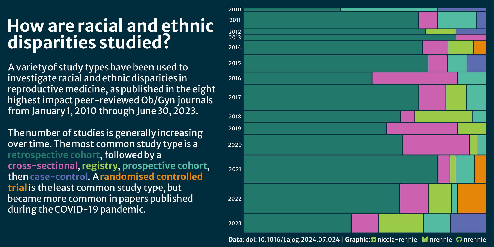
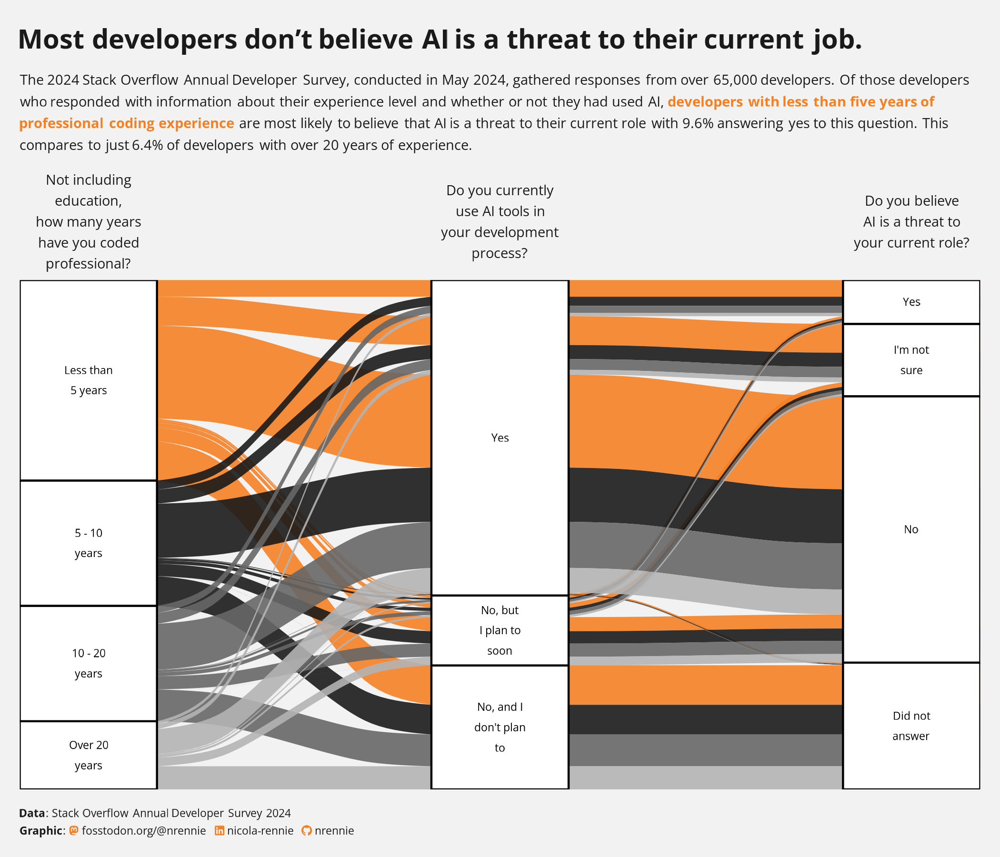
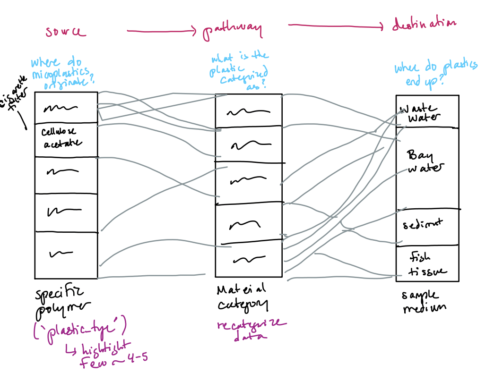
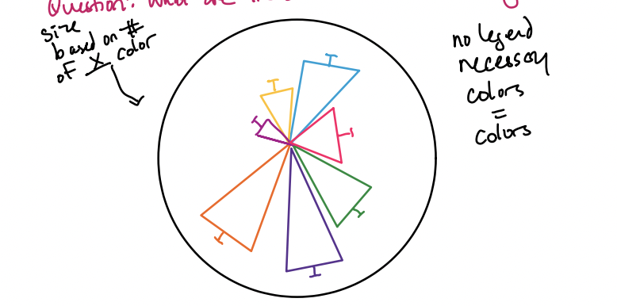
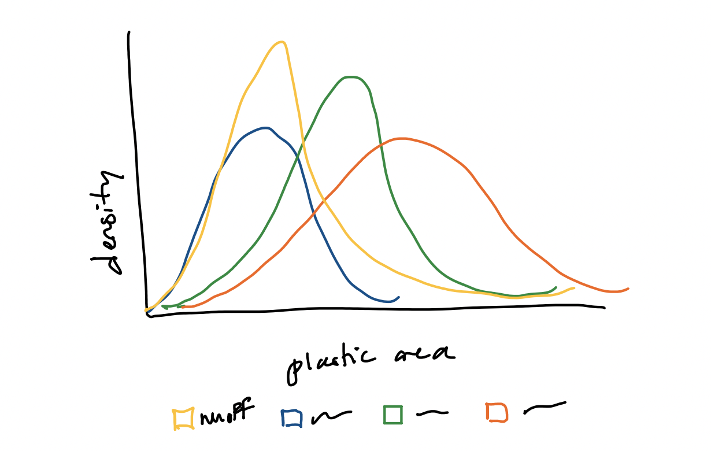
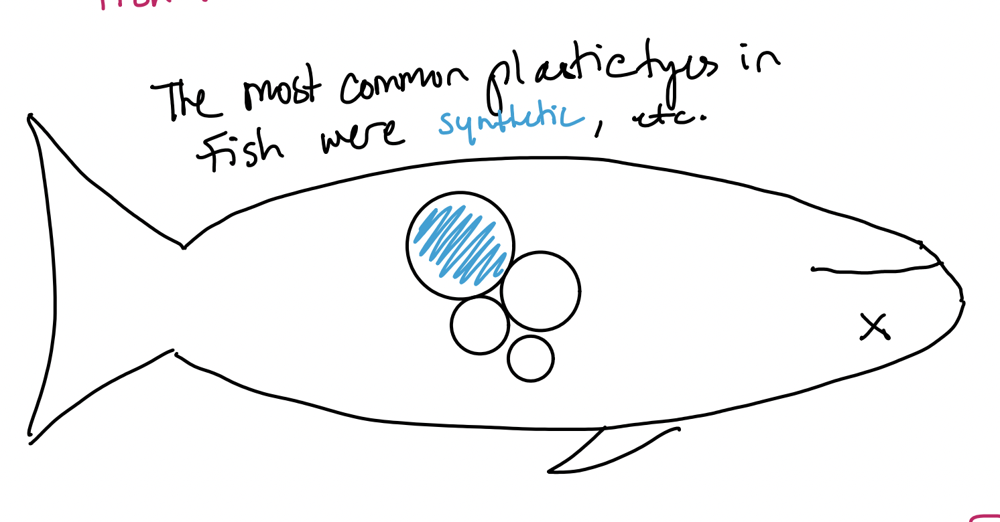

#......Set up......
library(tidyverse)
library(tidyr)
library(here)
library(dplyr)
library(ARTofR)
library(janitor)
library(readxl)
library(ggplot2)
library(stringr)
library(ggalluvial)
library(ggforce)
library(ggtext)
library(showtext)
library(glue)
library(packcircles)
#.......Import data......
micro_plastics <- read_excel(here("data/2020-09-11_microparticledata.xlsx")) %>%
# Change all columns to lower_snack_case
clean_names()
#.....Clean data with function....
source("clean_data_function.R")
micro_plastics_clean <- clean_microplastics(micro_plastics)
#.......Fonts.......
font_add_google(name = "Sarala", family = "sarala")
font_add_google(name = "Noto Sans", family = "noto-sans")
font_add_google("Hanken Grotesk", "hanken")Drafting Visualizations: Microplastics in the San Fransisco Bay Estuary
EDS 240 Final Project Milestone #3
Objective
Question 1 and 2
| Overarching Question | What are the sources and composition of microplastics in the SF Bay Estuary? |
|---|---|
| Question | Variables Used |
| What types of plastic dominate in each source? | Sample_medium × material type or polymer origin |
| What is the size distribution of particles across sources? | Sample_medium × size class or area (mm²) |
| What morphologies are associated with each source? | Sample_medium × morphological category |
| Does material type differ between stormwater and wastewater? | Filter Sample_medium to runoff vs. effluent, compare material type proportions |
| What are the dominant colors of plastic? | color, count the number of color occurrences in the data |
3. In FPM #2, you created some exploratory data viz to better understand your data. You may already have some ideas of how you plan to formally visualize your data, but it’s incredibly helpful to look at visualizations by other creators for inspiration. Find at least two data visualizations that you could (potentially) borrow / adapt pieces from. Download and embed them into your drafting-viz.qmd file, and explain which elements you might borrow (e.g. the graphic form, legend design, layout, etc.).

Elements I plan to use: * I like the background color (#002d3d) * I like how the text is the legend, this it an intuitive way to understand the graph and can be easy for the general public to interpret.
* I like how the alluvial graph has three distinct sections with questions at each stratum. * I plan to use the questions and add another stratum to my alluvial plot.4. Hand draw visualizations




Draft viz: alluvial graph
Question: What are the sources of microplastics in sample mediums?
pal2 <- c(
"Elastomers" = "#568226",
"Other" = "#fee090",
"Synthetic\nPolymers" = "#1f7f99",
"Textiles" = "#bf422e"
)
alluvial_plot <- micro_plastics_clean %>%
# Filter unknown and blankwater from data
filter(material_type != "Unknown") %>%
filter(sample_medium != "blankwater") %>%
filter(!is.na(material_type), !is.na(sample_medium)) %>%
count(sample_medium, material_type) %>%
# Plot
ggplot(aes(axis1 = material_type, axis2 = sample_medium, y = n)) +
geom_alluvium(aes(fill = material_type),
alpha = 0.7,
curve_type = "cubic") +
scale_fill_manual(values = pal2) +
# Fill axis 1 by material type
geom_stratum(width = 1/3, fill = "white", color = "grey80") +
geom_stratum(aes(fill = material_type), width = 1/3) +
geom_text(stat = "stratum", aes(label = after_stat(stratum))) +
scale_x_discrete(limits = c("Plastic type", "Sample medium"), expand = c(0.12, 0.1)) +
labs(x = NULL, y = NULL, fill = "Plastic Type",
title = "Sources of Microplastics in the San Francisco Bay Estuary",
subtitle = "Rigid synthetic polymers dominate microplastic composition across all sample mediums",
caption = "Data: San Francisco Bay Estuary Institute") +
theme_light() +
theme(#aspect.ratio = 1,
legend.position = "none",
# Title font adjustments (Update relative size!!!)
plot.title = element_text(family = "hanken",
face = "bold",
hjust = 0.5),
plot.subtitle = element_text(family = "hanken", hjust = 0.5, size = 9),
plot.caption = element_text(hjust = 1, family = "hanken"),
axis.ticks.y = element_blank(),
axis.text.y = element_blank(),
axis.title.x = element_text(family = "hanken", size = 4),
panel.grid.major.y = element_blank(),
plot.margin = margin(t= 1, r = 1, b =1, l = 1, "cm"),
panel.border = element_blank(),
)
# Enable show text
showtext_auto(enable = TRUE)
# View plot
alluvial_plot
Question: What are the dominant colors of plastic?
#....Set-up....
# Make df of plastic counts
color_counts <- micro_plastics_clean %>%
filter(!is.na(color)) %>%
count(color, sort = TRUE)
# Create palette for colors
color_pal <- c(
"Clear" = "#daeaf5", "Black" = "#141414",
"Blue" = "#1a5fb4", "White" = "#f0f0f0",
"Gray" = "#8c8c8c", "Light Blue"= "#5ab4e0",
"Red" = "#cc2200", "Dark Blue" = "#0d3572",
"Green" = "#2d7a3a", "Silver" = "#bfbfc0",
"Brown" = "#6b3a1f", "Yellow" = "#f5c800",
"Pink" = "#e87aa0", "Purple" = "#6a2db0",
"Orange" = "#e06010", "Turquoise" = "#18836e",
"Gold" = "#c8980a", "Violet" = "#7b28c8"
)
# Annotations
title <- glue::glue("What <span style='color:#cc2200;'>c</span><span style='color:#1a5fb4;'>o</span><span style='color:#2d7a3a;'>l</span><span style='color:#e87aa0;'>o</span><span style='color:#6a2db0;'>r</span><span style='color:#e06010;'>s</span> of microplastic particles<br>are present in the San Francisco Bay Estuary?")
annotation <- "SFEI found predominantly\nblack and clear plastic."
# Plot
color_plot <- color_counts %>%
# Ensure orders remain the same
mutate(color = factor(color, levels = color)) %>%
ggplot(aes(x = color, y = n, fill = color)) +
geom_col(width = 1, linewidth = 0.5) +
scale_fill_manual(values = color_pal) +
labs(x = NULL, y = NULL, title = title,
#subtitle = "Microplastic particles are predominantly black and clear",
caption = "Data Source: San Francisco Bay Estuary Institute (SFEI)") +
coord_polar() +
annotate(
geom = "text",
x = 14,
y = -max(color_counts$n) * 0.55,
label = annotation,
size = 2.8,
hjust = 0.5,
family = "hanken",
color = "black",
lineheight = 1.3
) +
theme_light() +
# Circle around the data (acts like a petri dish)
geom_hline(yintercept = max(color_counts$n) * 1.05,
color = "black", linewidth = 0.5) +
theme(legend.position = "none",
# Title font adjustments
plot.title = element_markdown(family = "hanken", face = "bold", hjust = 0.5),
plot.subtitle = element_text(family = "hanken", hjust = 0.5, size = 9),
plot.caption = element_text(hjust = 1, family = "hanken"),
axis.ticks.y = element_blank(),
axis.text.y = element_blank(),
axis.text.x = element_blank(),
panel.grid = element_blank(),
plot.margin = margin(t = 1, r = 1, b = 2, l = 1, "cm"),
panel.border = element_blank()
)
# View
color_plot 
#...Set up .....
medium_pal <- c(
"samplewater" = "#5ab4e0",
"sediment" = "#6b3a1f",
"effluent" = "#2d7a3a",
"tissue" = "#e87aa0",
"runoff" = "#c8980a"
)
subtitle <- glue::glue(
"Microplastic particle sizes for ",
"<span style='color:#2d7a3a;'>effluent</span>, ",
"<span style='color:#5ab4e0;'>samplewater</span>, ",
"<span style='color:#6b3a1f;'>sediment</span>, ",
"<span style='color:#c8980a;'>runoff</span>, ",
"and <span style='color:#e87aa0;'>fish tissue</span> sample mediums.<br>",
"<span style='color:#6b3a1f;'>Sediment</span> traps larger plastic particle sizes."
)
#....Plot....
density_plot <- micro_plastics_clean %>%
# Filter out Nas
filter(!is.na(sample_medium), !is.na(area_mm)) %>%
# Filter out blank water
filter(sample_medium != "blankwater") %>%
# Plot
ggplot(aes(x = area_mm, color = sample_medium)) +
geom_density(alpha = 0.3, linewidth = 1) +
scale_x_log10(labels = scales::label_number()) + #Scale for size data
scale_color_manual(values = medium_pal) +
labs(
title = "Plastic particle size distribution across sample mediums",
subtitle = subtitle,
x = "Plastic particle area (mm²)",
y = "Density",
fill = "Sample Medium",
caption = "Data Source: San Francisco Bay Estuary Institute (SFEI)"
) +
theme_minimal() +
theme(
axis.ticks.y = element_blank(),
axis.title.y = element_text(family = "hanken"),
axis.text.y = element_text(family = "hanken"),
axis.title.x = element_text(family = "hanken"),
axis.text.x = element_text(family = "hanken"),
panel.grid.major.y = element_blank(),
plot.caption = element_text(family = "hanken"),
plot.title = element_text(family = "hanken", face = "bold", hjust = 0.5),
plot.subtitle = element_markdown(family = "hanken", hjust = 0.5, size = 10),
legend.position = "none",
legend.text = element_text(family = "hanken")
)
# View density
density_plot
Question: What types of plastic end up in fish tissue?
subtitle_fish <- glue::glue(
"<span style='color:#1f7f99;'>Synthetic polymers</span> and ",
"<span style='color:#bf422e;'>textiles</span> found in fish tissue in high amounts"
)
fish_bubble_plot <- micro_plastics_clean %>%
# Filter out unknown -may use later
filter(material_type != "Unknown") %>%
# Filter for only tissue data
filter(sample_medium == c("tissue")) %>%
filter(!is.na(material_type)) %>%
count(material_type) %>%
mutate(circleProgressiveLayout(n, sizetype = "area")) %>%
# Plot
ggplot(aes(x0 = x, y0 = y)) +
geom_circle(aes(r = radius, fill = material_type)) +
labs(fill = "Plastic Type",
title = "What are the plastic types found in fish tissue?",
subtitle = subtitle_fish) +
scale_fill_manual(values = pal2) +
coord_equal() +
theme_void() +
theme(plot.title = element_text(family = "hanken", face = "bold", hjust = 0.5),
plot.subtitle = element_markdown(family = "hanken", hjust = 0.5, size = 9),
plot.caption = element_text(hjust = 1, family = "hanken"),
legend.text = element_text(family = "hanken"),
axis.ticks.y = element_blank(),
axis.text.y = element_blank(),
legend.title = element_text(family = "hanken"),
axis.text.x = element_blank(),
panel.grid = element_blank(),
plot.margin = margin(t = 1, r = 1, b = 2, l = 1, "cm"),
panel.border = element_blank()
)
# View plot
fish_bubble_plot
# Turn off showtext
showtext_auto(enable = FALSE)Questions:
1. What are the key insights you want your infographic to communicate, and how will your design choices help highlight and support those messages? I want my infographic to take the findings of SFEI and make them digestible to the public. I want my infographic to be informative with intuitive categories and relevant highlights of key data trends. I chose to have one-two fairly complex plots, such as the alluvial graph and density plot, to convey information and some plots with easier interpretation such as the bubble plot.
2. What challenges did you encounter or anticipate encountering as you continue to build / iterate on your visualizations in R? If you struggled with mocking up any of your three visualizations, describe those challenges here. I struggle to determine intuitive categories for my plastic_type column as well as ways to convey sample_medium in a way anyone would understand. I also noticed that after plotting the bubble chart, the sizing makes it hard to see the difference between textile and synthetics so I decided to highlight both as plastic types found in fish.
3. What ggplot extension tools / packages do you need to use to build your visualizations? Are there any that we haven’t covered in class that you’ll be learning how to use for your visualizations? The ggplot extensions that I have used are ggalluvial and packcircles.
4. What feedback do you need from the instructional team and / or your peers to ensure that your intended message and key insights are clear? I need assistance on re categorizing the data. I have some ideas I plan to implement, however I need to test with people about which categories make the most sense as people with little knowledge of micro plastic terminology.